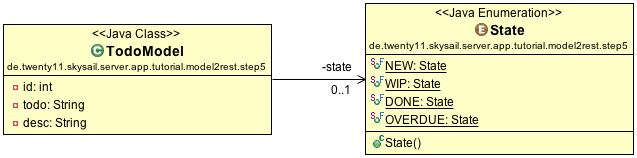

This guide will help you understand what skysail is about and how to get your feet wet with its concepts.
As skysail is about creating RESTful applications from domain models, we'll show you how a simple “todo” model is extended in six steps to create a running Todo-List application, including validation and persistence.
You don't need to download anything to follow this guide; simply have a look at the models and, if you like, launch the corresponding applications for each step.

To be honest, you need a little bit more than just a model or two to create a useful application. Some glue code is needed to make your model instances behave the way you want. Initially, this code can be generated. Once you need more sophisticated logic, you'll take over.
skysails user interface is purely generic and meant to be used by admins, developers and support staff. If you need a client GUI, try some of the fancy javascript frameworks (or anything that supports HTTP) and communicate with the skysail server backend via JSON.
Let's start with a very simple model:
public class TodoModel1 { // 1
@Field // 2
private String todo;
(getter and setter omitted) // 3
}
skysail creates a RESTful application for your model. So, under “Demo Application”, click the “Launch” link to see the current model “in action”. Not much has yet been defined on your model, so you can submit the form, but nothing will happen yet.
Models need validation - not all values and their combinations are valid in a specific context. skysail helps you defining constraints using the JSR 303 standard. Simple predefined constraints can be applied on the field level; more complex ones can be written for the entire bean.
So, let's extend our little model to look like this:
@Data // 1
public class TodoModel2 { // 2
@Field
@Size(min = 3) // 3
private String todo;
}
Check it out: click on the “Launch” link and try to create a new Todo with value “A”.
Models which cannot be persisted usually are of little value, at least when it comes to business models. skysail helps you with creating, retrieving, altering and deleting your model instances. The best thing about our approach is this: If your models are simple enough, you don't have to write anything to be able to persist them. Ok, cheated… You have to give them an ID field ;)
So, we'll add an ID field to the business model we have shown in step 2:
@Data
public class TodoModel2 {
@Id // 1
private int id; // 2
@Field
@Size(min = 3)
private String todo;
}
Of course, we need some code to actually persist the model. For now,the repository code is not much more than a simple CircularFifoQueue, limited to five items.
By now, we can create new Todo instances which are persisted - check it out.
Again, we'll change the model in this step a little bit to show you some more of the concepts:
@Data
public class TodoModel4 {
@Id
private int id;
@Field(htmlPolicy = HtmlPolicy.NO_HTML,type = InputType.TEXTAREA) // 1 and 2
private String todo;
}
Try to add simple html in this textarea and see what happens. And try writing some javascript as well.
In this step we will extend the model to its final version in this tutorial and reuse it in the steps to come.
Let's add a Due-Date-Field and a (calculated) State field, indicating if the Todo is new, pending, done or overdue.
@Data
public class TodoModel {
@Id
private int id;
@Field
@Size(min = 3)
private String todo;
@Field(type = InputType.TEXTAREA)
private String desc;
@Field
private Date due;
private State state;
}
Launch it!
If an application is only accessible with a browser, you loose a lot of opportunities for decent integration with other applications. So, while skysail provides a generic GUI to interact with your model instances, skysail also let's you interact via JSON without any additional effort.
The simplest integration setup is to utilize curl to send a new Todo to the skysail server like this:
curl -H "Content-Type: application/json" -d '{"todo":"xyz","desc":"mydesc"}' http://www.skysail.io/tutorialM2R/step5/
If you have curl installed, you can run this from the command line and you will see (once the page has been refreshed) a new entry in the JSON Get representation below.
We hope you got an idea of what skysail is about. But we're just getting started… There are a lot of topics we didn't cover yet. Some of them are already being tackled, others are on the roadmap.
A proper Todo Application needs some kind of user management - who is the owner of a Todo, who is currently responsible, who has access to which Todos and the like. We will provide a Todo Demo Application to show you how these issues can be handled with skysail.
Status: Proof of concept
skysail exposes models as RESTful applications; that means you get an API which let's you interact with the models. This API needs documentation to be truely useful, and this documentation can be generated automatically from the information on the model.
Status: Proof of concept
An application needs to be configured - where is the database, how to access the mail server, what port should it run at and so on.
Status: alpha
This is where you will find all the code snippets used in each of the following steps.
The complete code for this tutorial can be found at github.
See every stage of the application in action! Use the "launch demo" button on every of the following pages.
Maybe you wonder where all the text and labels in the demo applications come from? They are defined in a resource bundle, the classic approach in java for internationalization, aka i18n.
skysail is not about the GUI, but there is a generic User Interface which is created with stringtemplate. The relevant files can be found in the *Stg-Folders. As long as you are happy with the generic layout, you don't have to write any html for the generated application - but you could.
Seems like the guys at Apache Isis and at API Spark are doing something quite similar.... working on a comparison matrix, stay tuned ;)
Of course skysail implements a user management and security scheme, but to actually see that you'd have to register. If you like to register once this will be available, check our twitter account.
skysail is about integration: Create easily an AngularJS frontend which communicates with the skysail backend via JSON. Or write a .Net GUI. Or get mobile. Or setup an eclipse richt client. Or simply use the browser...
We are happy about feedback!
Drop us an email: hello@skysail.io
There is much more in the pipeline... stay tuned on
Twitter.